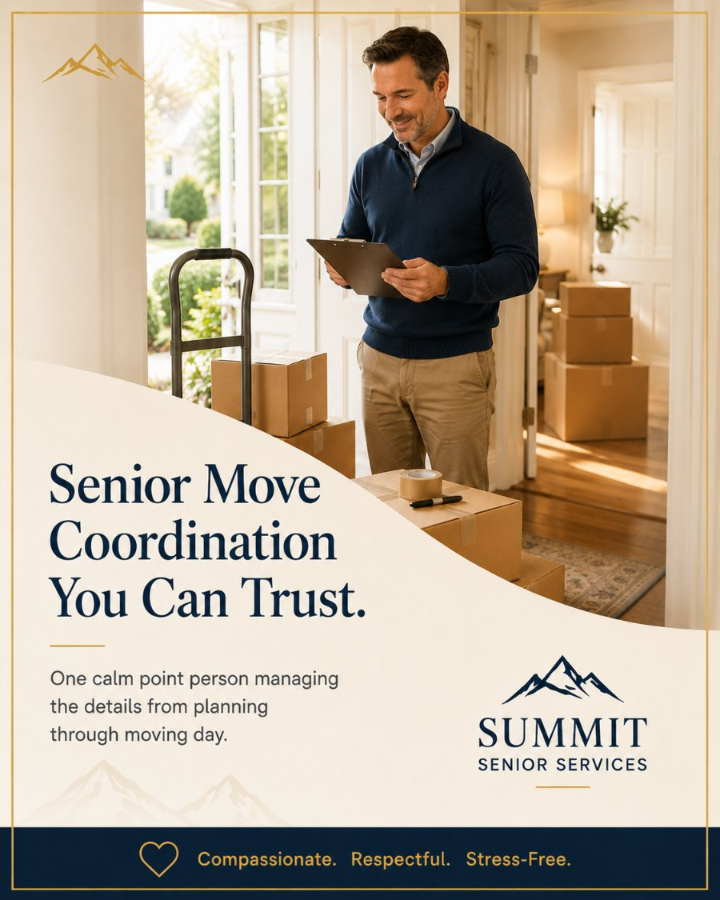

Let's take the whole move off your plate.
The free in-home consultation is the easiest way to start. No pressure, no obligation — just a conversation about what's needed and what's possible.
BrianFounder, Summit Senior Services
We personally handle the entire move — sorting, packing, loading, transport, unloading, unpacking, and setup. No third-party moving company, no rotating crew. The same hands that box it up at your parent's house unbox it at their new one.

Most moving companies show up on move day, load a truck, and drive away. A senior move needs far more than that — sorting decisions, a receiving community's move-in window, an elevator reservation, furniture that has to fit a smaller floor plan, and a parent who needs the whole thing handled gently.
We coordinate all of it under one phone number. Because we do the moving ourselves, there's no finger-pointing between a packer, a mover, and a setup crew. One team owns the outcome from the first sorted drawer to the last picture hung — and you always know exactly who to call.
For families managing a move from across the state or the country, we become your local eyes and hands. You get clear, proactive updates by phone, text, or email, and you can be as involved or as hands-off as your schedule allows.
This is our most complete service — the connective tissue that ties every other service together into one smooth day.
No third-party van line, no rotating subcontractors. Our own team loads, transports, and unloads — so nothing falls through the cracks between vendors.
One person owns your move from start to finish. No call centers, no being passed around, no wondering who's actually responsible for the day.
We work directly with the receiving senior community's move-in team to lock the move window, elevator, and loading-dock access well in advance.
Someone who knows your family's plan is on-site the entire day, directing the work and making sure every item lands in the right room.
Floors, doorways, and corners are protected, furniture is padded and secured, and fragile pieces are handled with deliberate, unhurried care.
We don't just drop boxes and leave. By the end of the day furniture is placed, beds are made, and the essentials are unpacked and usable.
Calm, coordinated, and supervised from the first box to the final walk-through.
We confirm the timeline, the receiving community's rules, the furniture that's coming, and exactly where everything will go at the new home.
We pack (or finish packing), pad and secure everything, protect the home's surfaces, and load in a careful, organized sequence.
We transport directly to the new home, coordinate the move-in window, and unload each item straight to its destination room.
We unpack essentials, place furniture, and walk the new home with you to confirm everything is right before we call it done.
The same friendly faces from the first sort to the last box. No strangers tramping through, no chaos — just a move handled with dignity.
Managing a parent's move from another city is exhausting. We become your local hands and keep you updated at every step so you can stay at work and stay sane.
We coordinate directly with the community's move-in team so the right items arrive in the right rooms at the right time, with minimal disruption to the building.
Let's map out the whole day together — the community's rules, the furniture, the timeline — and take it off your plate entirely.
Most families use more than one of our services. Here are the ones that pair most naturally with senior move coordination.
Move coordination cost depends on the size of the home, the distance, the services bundled in, and the receiving community's requirements. We don't publish fixed packages — after a free in-home consultation you'll receive a clear written quote built around your move. No surprises, no hidden fees.
The free in-home consultation is the easiest way to start. No pressure, no obligation — just a conversation about what's needed and what's possible.